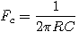

A Resistor-Capacitor Highpass Filter is a simple analog filter that allows high frequencies to pass but attenuates lower frequencies. The cutoff frequency of the filter is determined by .
An RC highpass filter effectively forms a frequency dependent voltage divider. At low frequencies, the capacitor acts as a very high resistance, so the signal is attenuated a lot. At higher frequencies, the capacitor has less resistance, so the signal is attenuated less.
A single RC filter has slow rolloff - about 20 decibels per decade. Multiple RC filters can be chained for better response, but at the cost of higher impedance.